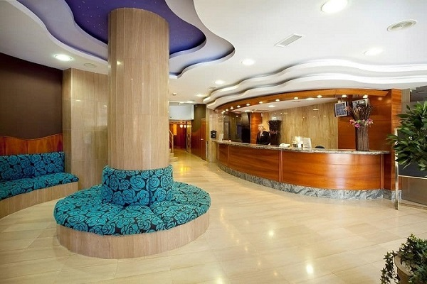

Очень хороший отель!
Аматус Бич Лимассол 5* - один из популярнейших отелей на Кипре. Красивая зеленая территория, безупречный сервис, прекрасный SPA-центр с разнообразием процедур, широкий выбор ресторанов – все это своеобразная визитная карточка AMATHUS BEACH LIMASSOL 5*. Дизайн отеля продуман до мелочей: от декора номеров до цветочных композиций в холлах. Этот безупречный стиль не оставляет туристов равнодушными, создавая уютную и расслабляющую атмосферу, как нельзя лучше способствующую хорошему отдыху. Рекомендуем для отдыха всех категорий туристов.
Номерной фонд отеля AMATHUS BEACH LIMASSOL 5* В отеле 239 номеров различных категорий, большая часть из них с видом на море. 103 Superior Twin Inland View / Sea View (номера без балкона, макс. 2+2 или 3 чел., 31 м2), 1 Presidential Suite (спальня с выходом на балкон, ванная комната (джакузи + душевая кабина), просторная гостиная с двумя балконами и гостевым туалетом (в номере всего 3 балкона), макс. 2 чел., 82 м2), 3 Executive Suite (спальня и гостиная с межкомнатной дверью, ванная комната с ванной, балкон, макс. 2 чел., 50 м2), В дополнительном корпусе 36 номеров: 27 Junior Suite Sea View (однокомнатный номер, макс. 2+2 или 3 чел., 37 м2), 9 Junior Suite with Private Pool (однокомнатный номер, 1 этаж, частный бассейн с джакузи, макс. 2 +2 или 3 чел., 37 м2),
К началу страницы